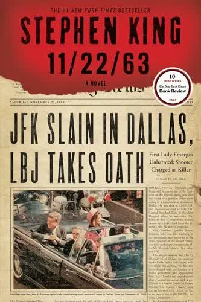

11/22/63 by Stephen King

11/22/63 is my first Stephen King book, and I must say, it is one hell of a book.
The story revolves around an English teacher at Lisbon High School, Jake Epping, who, through a strange turn of events, discovers the possibility of time travel. Eventually, Jake travels back to the past, specifically to the morning of September 9, 1958, at 11:58, in order to prevent Kennedy’s assassination.
It took me 11 days to read it. Some of the best 11 days of my life…
By the end, I simply could not accept the fact that the novel was over.
Why? Why, Stephen? Why couldn’t you write another ten thousand pages?
The novel is so brilliant that I do not want to spoil even a single detail, so I will try to avoid spoilers as much as possible.
Before I started reading it, I thought the book would revolve around Kennedy, with a focus on investigations and things like that. But it turned out that the book is not really about Kennedy at all — and you are in for such a treat. I envy you.
To write the novel, King personally traveled to Dallas in order to portray everything as accurately as possible. The historical context is presented quite faithfully, at least judging by what I know about JFK’s assassination, and the story itself is genuinely fascinating.
The book is, of course, written with King’s signature humor. By the time I am writing this review, I have already read three of King’s books, so I have had enough time to appreciate the full charm of Stephen’s humor.
Another detail I found fascinating is that Jake ends up in Derry, the town from King’s It, and Shawshank Prison is mentioned as well. King’s worlds are connected, and I absolutely loved that. The novel also mentions tons of different cars, and I probably spent at least five hours while reading just googling their names and reading about them. King really knows how to intrigue you...
Thanks to this book, I fell in love with the time-travel genre.
I recommend it to everyone. It will not leave you indifferent.
I have never been what you’d call a crying man, though by the end, I did shed a tear.
Thank you to my dearest friend Anton for such a recommendation!
And thank you to my friend Evgeny for randomly finding this book on your shelf one Sunday morning.
— Someone you knew in another life, honey.
And we danced.